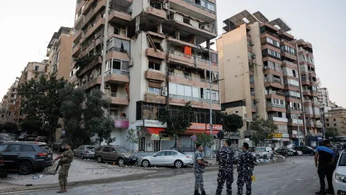

Israel ha bombardejat, per primer cop, zones residencials del centre de Beirut en una nova nit d'atacs, amb l'objectiu de destruir arsenals de Hezbollah, segons l'exèrcit israelià. És el primer atac que va més enllà de l'ofensiva dels últims dies, centrada en el sud de la ciutat i del país.
Aquesta matinada un edifici residencial de la capital del Líban ha rebut l'impacte d'un bombardeig de l'aviació israeliana que hauria mort tres líders del Front Popular per a l'Alliberament de Palestina.
En un comunicat, la facció palestina ha informat que les tres víctimes són Muhammad Abdul Aal, membre del buró polític del Front i cap del departament de seguretat militar; Imad Awda, membre del departament militar del Front i el seu comandant militar al Líban; i el líder Abdul Rahman Abdul Aal.
